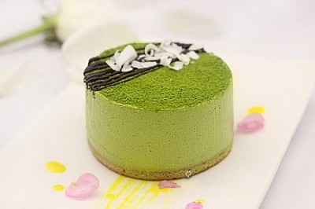

Today Specials
-
Black
黑森林
黑森林蛋糕是德国著名甜点，在德文里全名"Schwarzwaelder" 为黑森林。它融合了樱桃的酸、奶油的甜、巧克力的苦、樱桃酒的醇香。
-
Sand
沙架蛋糕
沙架蛋糕起源于1832年，一位王子的家厨Franz.Sacher研发出一种甜美无比的朱古力馅，受到皇室的喜爱。后来在当时贵族经常出入的沙架饭店也以沙架蛋糕为招牌点心。
-
Doren
史多伦蛋糕
数百年如一日，造型古朴，做法繁杂，材料比例呈迷，仅此只有少数几家老糕饼铺的师傅会做。在奥地利，史多伦蛋糕物以稀为贵，
-
CASTELLA
CASTELLA蛋糕也叫长崎蛋糕是日式蛋糕的代名词，最早起源于荷兰,贵族皇室做为国宴飨客或招待使节时，表达最隆重的敬意
Castella
-
提拉米苏
提拉米苏，一种有名的意大利式蛋糕。是由泡过咖啡或兰姆酒的手指饼干，加上一层马斯卡彭、蛋黄、干酪、糖的混合物，然后再在蛋糕表面洒上一层可可粉而成。
Tiramisu
-
慕斯蛋糕
慕斯蛋糕最早出现在美食之都法国巴黎，冷冻后食用其味无穷，成为蛋糕中的极品。
Mousse
Our Features
- 
慕斯的英文是mousse，是一种奶冻式的甜点，可以直接吃或做蛋糕夹层，通常是加入奶油与凝固剂来造成浓稠冻状的效果。慕斯是从法语音译过来的。慕斯蛋糕最早出现在美食之都法国巴黎，最初大师们在奶油中加入起稳定作用和改善结构，口感和风味的各种辅料，冷冻后食用其味无穷，成为蛋糕中的极品。慕斯与布丁一样属于甜点的一种，其性质较布丁更柔软，入口即化。
-
芒果慕斯
-
提拉米苏
-
抹茶慕斯
-
西番莲慕斯
-
慕斯乳酪蛋糕
-
蓝莓之夜慕斯蛋糕
What Our Customers are Saying
-
蛋糕很漂亮，颜值超级在线，宝宝和孕妇都可以食用，蛋糕品质好，奶油棒不腻人，很满意。入口时嫩嫩的，香气扑鼻，滑滑的栗子顺着奶油一下子就吞了进去，甜丝丝的奶油丝毫不滑腻，微微的甜，谁尝了，都绝对会忍不住吃上第二口。

Dapibus
-
蛋糕胚色泽金黄，外形规则，质地柔软，香味浓郁。把一大勺慕斯蛋糕塞入口中，冰凉埂奶油一下子就化成了暖暖的，带有淡淡乳酪香味的蛋糕底十分诱人，软软的蛋糕中夹着甜蜜的鲜奶油，真是美味至极啊！

Vulputate
-
本身十分有特色，网红款的感觉，外形吸引眼球，蛋糕本身也甜而不腻，用勺子轻轻挖下一块带着草莓奶油的蛋糕，放入口中,根本不用嚼，含在口中一会儿就化掉了，唇齿间留下一丝淡淡的清香。细细回味，奶油浓浓的气息回旋在口中，甜甜的，香香的。

Interdum